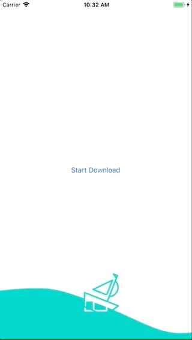
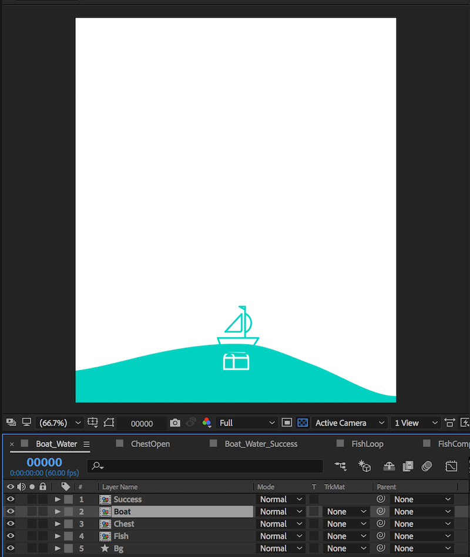
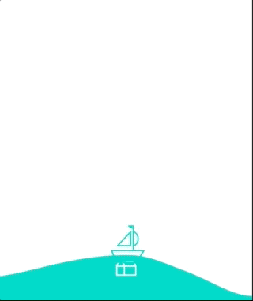

Building a Dynamic Progress Loader with Lottie
In this guide we will build a determinate progress loader with Lottie. Determinate loaders are animations that show the progress of a download in real-time. Using Lottie's dynamic properties API we can change an animation while it plays it in response to a download progress.

The final animation will be a boat rolling over the ocean, as the download reaches 100% the water will fill the screen. Once the download finishes a completion animation will play.
You can find the animation's After Effects file and Lottie JSON Here
The Animation
This guide will not cover how to make an animation in After Effects, but we should know how the file we are working with is structured. The dynamic properties API in Lottie allows us to change the key-frame data backing a Lottie animation while the animation is playing. These animation properties match animation properties in After Effects.

Our Boat_Loader animation has five layers in it: Success, Boat, Chest, Fish and Bg. Each of these layers have a number of properties we can change under Transform: Position, Rotation, Scale, Opacity. Some of these layers are a Precomp (Which stands for pre-composition); a layer that wraps another group of layers. We can even access the properties of a precomp's child layers if we would like. For this exercise we will just stick to moving the water and the boat.

Playing the animation as-is will animate the rolling waves for a second, then the waves disappear suddenly and the treasure chest opens. The animation has been built in two parts. The first half is a loop that will show the waves rolling forever. The second half is the success animation. Playing the animation from the end of a loop into the success animation is seamless. As the download progresses we want the water to fill the screen. We will need to manually move the waves up the screen by changing the Wave layer's Position property. Once the download is finished we will finish the current animation loop and then play the last half of the animation once to show the success.
Getting Started
Let's start with some ground work. We need a new ViewController and a large download to track. Create a new UIViewController subclass, and import Lottie. In keeping with the maritime theme, the file we will be downloading is a 10mb oceanography map. Now lets create a network request to download our map.
Swift:
var downloadTask: URLSessionDownloadTask?
func createDownloadTask() {
let downloadRequest = URLRequest(url: URL(string: "https://upload.wikimedia.org/wikipedia/commons/f/ff/Pizigani_1367_Chart_10MB.jpg")!)
let session = URLSession(configuration: URLSessionConfiguration.default, delegate: self, delegateQueue: OperationQueue.main)
downloadTask = session.downloadTask(with:downloadRequest)
downloadTask!.resume()
}
Objective-C:
- (void)createDownloadTask {
NSURLRequest *downloadRequest = [NSURLRequest requestWithURL:[NSURL URLWithString:@"https://upload.wikimedia.org/wikipedia/commons/f/ff/Pizigani_1367_Chart_10MB.jpg"]];
NSURLSession *session = [NSURLSession sessionWithConfiguration:[NSURLSessionConfiguration defaultSessionConfiguration]
delegate:self
delegateQueue:[NSOperationQueue mainQueue]];
_downloadTask = [session downloadTaskWithRequest:downloadRequest];
[_downloadTask resume];
}
You will also need to make your view controller class adhere to the NSURLSessionDownloadDelegate protocol and add in the following stub methods.
Swift:
class ViewController: UIViewController, URLSessionDownloadDelegate {
func urlSession(_ session: URLSession, downloadTask: URLSessionDownloadTask, didFinishDownloadingTo location: URL) {
// Called when the download is finished.
}
func urlSession(_ session: URLSession, downloadTask: URLSessionDownloadTask, didWriteData bytesWritten: Int64, totalBytesWritten: Int64, totalBytesExpectedToWrite: Int64) {
// Called as the download progresses.
}
}
Objective-C:
@interface LADownloadTestViewController () <NSURLSessionDownloadDelegate>
@end
- (void)URLSession:(nonnull NSURLSession *)session
downloadTask:(nonnull NSURLSessionDownloadTask *)downloadTask
didFinishDownloadingToURL:(nonnull NSURL *)location {
// Called when the download is finished.
}
- (void)URLSession:(NSURLSession *)session
downloadTask:(NSURLSessionDownloadTask *)downloadTask
didWriteData:(int64_t)bytesWritten
totalBytesWritten:(int64_t)totalBytesWritten
totalBytesExpectedToWrite:(int64_t)totalBytesExpectedToWrite {
// Called as the download progresses.
}
Building the UI
Now that we have our download task created, lets create the UI. We will need a single Lottie view for the animation, and a button to start the download. Add the animation's JSON Boat_Loader.json to the App bundle. Create the animation view, and set it to be a full-screen view.
Swift:
private var boatAnimation: LOTAnimationView?
override func viewDidLoad() {
super.viewDidLoad()
// Create Boat Animation
boatAnimation = LOTAnimationView(name: "Boat_Loader")
// Set view to full screen, aspectFill
boatAnimation!.autoresizingMask = [.flexibleHeight, .flexibleWidth]
boatAnimation!.contentMode = .scaleAspectFill
boatAnimation!.frame = view.bounds
// Add the Animation
view.addSubview(boatAnimation!)
}
Objective-C
- (void)viewDidLoad {
[super viewDidLoad];
self.view.backgroundColor = [UIColor whiteColor];
// Create Boat Animation
_boatLoader = [LOTAnimationView animationNamed:@"Boat_Loader"];
// Set view to full screen, aspectFill
_boatLoader.autoresizingMask = (UIViewAutoresizingFlexibleWidth | UIViewAutoresizingFlexibleHeight);
_boatLoader.contentMode = UIViewContentModeScaleAspectFill;
_boatLoader.frame = self.view.bounds;
// Add the Animation
[self.view addSubview:_boatLoader];
}
Now add a button placed center in the screen that will start the download. Add this to the bottom of the viewDidLoad function. The button will need to call a function when pressed. Add the function that the button calls that will trigger the download.
Swift:
override func viewDidLoad() {
super.viewDidLoad()
...
let button = UIButton(type: .system)
button.setTitle("Start Download", for: .normal)
button.sizeToFit()
button.center = view.center
button.addTarget(self, action: #selector(startDownload(button:)), for: .touchUpInside)
view.addSubview(button)
}
@objc func startDownload(button: UIButton) {
button.isHidden = true
createDownloadTask()
}
Objective-C
- (void)viewDidLoad {
[super viewDidLoad];
UIButton *button = [UIButton buttonWithType:UIButtonTypeSystem];
[button setTitle:@"Start Download" forState:UIControlStateNormal];
[button sizeToFit];
button.center = self.view.center;
[button addTarget:self action:@selector(startDownload:) forControlEvents:UIControlEventTouchUpInside];
[self.view addSubview:button];
}
- (void)startDownload:(UIButton *)sender {
sender.hidden = YES;
[self createDownloadTask];
}
Making it all move
If you run the App now you should see a boat sitting on a wave. If you click on the download button the image will download, but the animation never plays. Lets wire it all up!

First, let's look closer at the After Effects file. The animation has a layer named Boat which contains the boat and the rolling waves. We want to move this layer up the screen as the download progresses. We need to drive the position of the Boat layer with the progress of the download. Looking at the After Effects file we can see that the property we want to change is Boat.Transform.Position In order to change an animation we need two things. A LOTKeypath and a LOTValueDelegate.
A LOTKeypath is used to match views inside of a LOTAnimation to their counterparts in After Effects. Properties in After Effects are nested (Layer -> Objects -> Animatable Properties). LOTKeypath is used to search through the animation data to find the properties to change. They can be constructed explicitly ("Circle Layer.Circle Shape.Fill.Color") or with wild-cards ("**.Fill.Color" will find all color properties belonging to objects named Fill). For more information see the documentation for LOTKeypath.
LOTValueDelegate is a protocol that is called for a specific keypath as an animation plays. It can override the keypath's data by returning new data for the keypath. There are several subclasses of LOTValueDelegate, one for each primitive type: Color, Number, Point, Size, and Path. There are also pre-built objects that adhere to LOTValueDelegate to perform basic animation driving functions. The pre-built objects come in three flavors each with subclasses for each primitive: LOTValueCallback, LOTBlockCallback, LOTInterpolatorCallback. For this excercise we will use a LOTInterpolatorCallback. For more information see the documentation for LOTValueCallback, LOTBlockCallback, LOTInterpolatorCallback.
Lets set up our LOTInterpolatorCallback. A LOTInterpolatorCallback contains a startPoint, an endPoint, and a currentProgress property. As the currentProgress property is driven from 0 to 1, the interpolator will move the animation property specified by the keypath from the startPoint to the endPoint. We will want the boat layer to move from the center of the screen up one entire screen height. Its important to note that Lottie maintains a weak reference to any delegate added. The view controller will hold the interpolator since it needs to make changes as the download progresses.
Dynamic properties work in the animation's coordinate space, so we will have to convert the screen coordinates into the Boat layer coordinates using the convertPoint:toKeypathLayer function on LOTAnimationView. This function finds the layer at the specified keypath and converts the given point from the animation's parent view coordinate space into the layers coordinate space.
Add this at the bottom of viewDidLoad.
Swift:
// The center of the screen, where the boat will start
let screenCenter = CGPoint(x:view.bounds.midX, y:view.bounds.midY)
// The center one screen height above the screen. Where the boat will end up when the download completes
let offscreenCenter = CGPoint(x:view.bounds.midX, y:-view.bounds.midY)
// Convert points into animation view coordinate space.
let boatStartPoint = boatAnimation!.convert(screenCenter, toKeypathLayer: LOTKeypath(string: "Boat"))
let boatEndPoint = boatAnimation!.convert(offscreenCenter, toKeypathLayer: LOTKeypath(string: "Boat"))
// Set up out interpolator, to be driven by the download callback
positionInterpolator = LOTPointInterpolatorCallback(from: boatStartPoint, to: boatEndPoint)
Objective-C
// The center of the screen
CGPoint screenCenter = CGPointMake(CGRectGetMidX(self.view.bounds), CGRectGetMidY(self.view.bounds));
// The center one screen height above the screen.
CGPoint offscreenCenter = CGPointMake(screenCenter.x, -screenCenter.y);
LOTKeypath *boatKeypath = [LOTKeypath keypathWithString:@"Boat"];
// Convert points into animation view coordinate space.
CGPoint boatStartPoint = [_boatLoader convertPoint:screenCenter toKeypathLayer:boatKeypath];
CGPoint boatEndPoint = [_boatLoader convertPoint:offscreenCenter toKeypathLayer:boatKeypath];
// Set up out interpolator, to be driven by the download callback
_positionInterpolator = [LOTPointInterpolatorCallback withFromPoint:boatStartPoint toPoint:boatEndPoint];
Now that we have a _positionInterpolator lets set it on the Boat.Transform.Position property of animation view and tell the animation view to loop the first half of the animation.
Swift:
// Set the interpolator on the animation view for the Boat.Transform.Position keypath.
boatAnimation!.setValueDelegate(positionInterpolator!, for:LOTKeypath(string: "Boat.Transform.Position"))
//Play the first portion of the animation on loop until the download finishes.
boatAnimation!.loopAnimation = true
boatAnimation!.play(fromProgress: 0,
toProgress: 0.5,
withCompletion: nil)
Objective-C
// Set the interpolator on the animation view for the Boat.Transform.Position keypath.
[_boatLoader setValueDelegate:_positionInterpolator forKeypath:[LOTKeypath keypathWithKeys:@"Boat", @"Transform", @"Position", nil]];
//Play the first portion of the animation on loop until the download finishes.
_boatLoader.loopAnimation = YES;
[_boatLoader playFromProgress:0 toProgress:0.5 withCompletion:nil];
Now, if you run the App you should see the boat moving over the waves indefinitely. If you press the download button, the boat will continue to move over the waves but nothing else happens. We need to hook the download progress up to the _positionInterpolator in the request's delegate callback.
Swift:
func urlSession(_ session: URLSession, downloadTask: URLSessionDownloadTask, didWriteData bytesWritten: Int64, totalBytesWritten: Int64, totalBytesExpectedToWrite: Int64) {
positionInterpolator?.currentProgress = CGFloat(totalBytesWritten) / CGFloat(totalBytesExpectedToWrite)
}
Objective-C
- (void)URLSession:(NSURLSession *)session
downloadTask:(NSURLSessionDownloadTask *)downloadTask
didWriteData:(int64_t)bytesWritten
totalBytesWritten:(int64_t)totalBytesWritten
totalBytesExpectedToWrite:(int64_t)totalBytesExpectedToWrite {
_positionInterpolator.currentProgress = (CGFloat)totalBytesWritten / (CGFloat)totalBytesExpectedToWrite;
}
Run the App and press download. You should see the water filling the screen as the download progresses! Fantastic! We're almost done! When the download finishes the animation should play through the current loop, then play the last half of the animation, which will notify the success of the download.
Swift:
func urlSession(_ session: URLSession, downloadTask: URLSessionDownloadTask, didFinishDownloadingTo location: URL) {
// Pause the animation and disable looping.
boatAnimation!.pause()
boatAnimation!.loopAnimation = false
// Speed up animation to finish out the current loop.
boatAnimation!.animationSpeed = 4
boatAnimation!.play(toProgress: 0.5) {[weak self] (_) in
// At this time the animation is at the halfway point. Reset sped to 1 and play through the completion animation.
self?.boatAnimation!.animationSpeed = 1
self?.boatAnimation!.play(toProgress: 1, withCompletion: nil)
}
}
Objective-C
- (void)URLSession:(nonnull NSURLSession *)session
downloadTask:(nonnull NSURLSessionDownloadTask *)downloadTask
didFinishDownloadingToURL:(nonnull NSURL *)location {
// Pause the animation and disable looping.
[_boatLoader pause];
_boatLoader.loopAnimation = NO;
// Speed up animation to finish out the current loop.
_boatLoader.animationSpeed = 4;
[_boatLoader playToProgress:0.5 withCompletion:^(BOOL animationFinished) {
// At this time the animation is at the halfway point. Reset sped to 1 and play through the completion animation.
_boatLoader.animationSpeed = 1;
[_boatLoader playToProgress:1 withCompletion:nil];
}];
}
Run the App, and now you should see the completion animation!
Conclusion
Hopefully this has shown some of the power of dynamic properties with Lottie! This is only a small example of what can be achieved. Read the documentation on dynamic properties to see what else you can do. Happy animating!